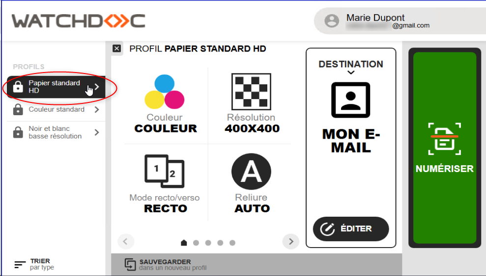
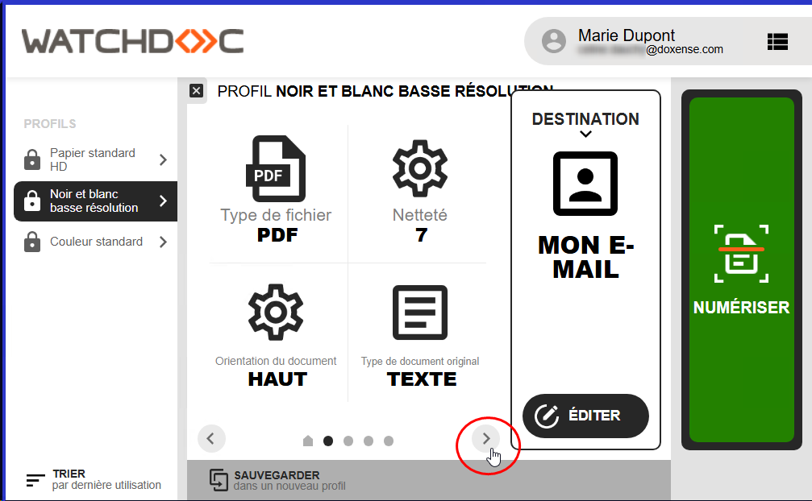
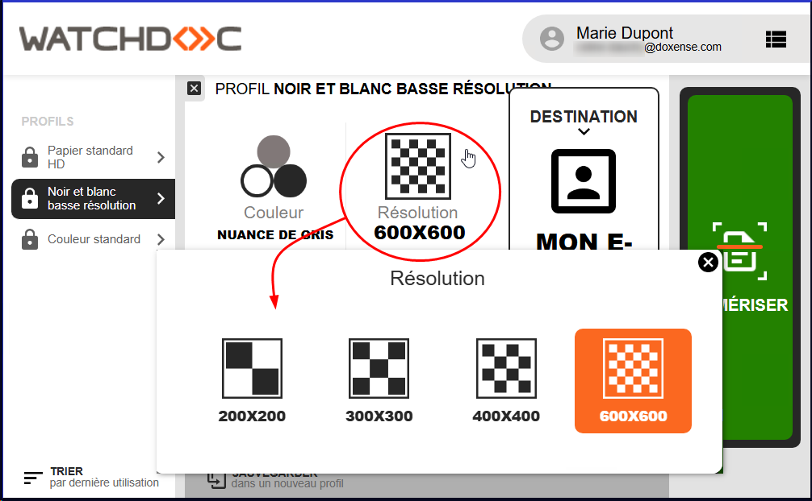
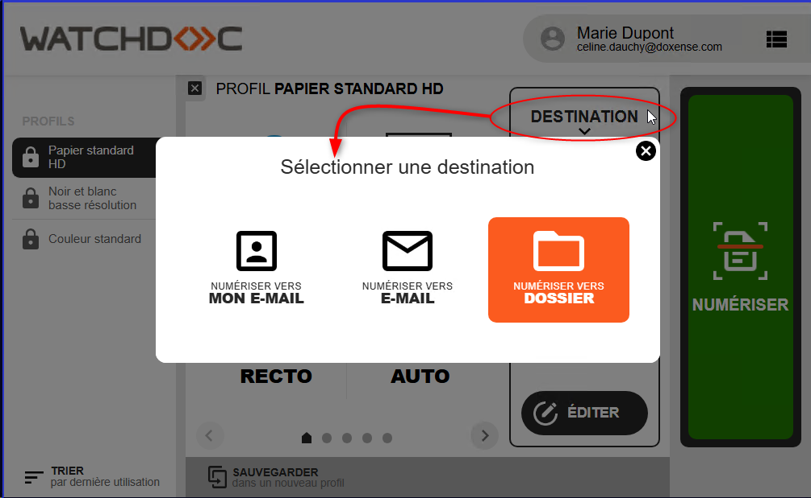
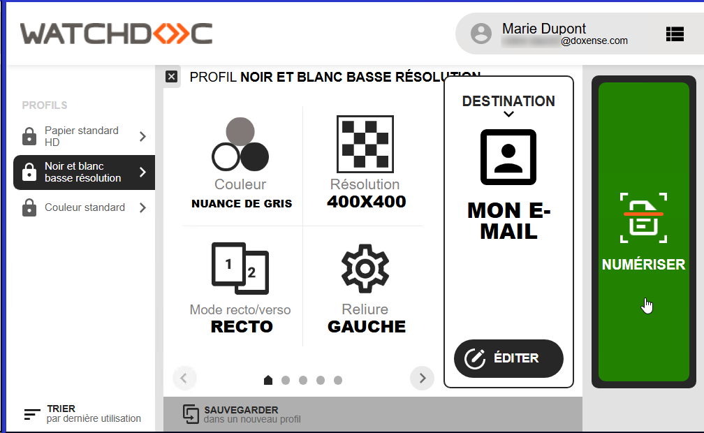
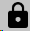

|
Vérifiez que vos imprimantes sont compatibles avec la fonction de numérisation. |
Scanner (ou numériser) un document papier, c'est créer des données numériques à partir d'un support physique. Quand on crée un scan à partir d'un document, on le numérise. Dans Watchdoc, cette fonctionnalité s’appelle WEScan (cf. Utiliser WEScan).
Plus simplement, vous pouvez suivre le tutoriel ci-dessous.
* Rapprochez-vous du service informatique de votre entreprise pour vérifier la compatibilité.
Choisir un profil de numérisation
Dans la zone des profils, un profil est sélectionné par défaut : le détail de ses paramètres est affiché.
-
Pour sélectionner un autre profil, cliquez sur le bouton
 pour accéder à la liste des profils proposés :
pour accéder à la liste des profils proposés :
-
dans la liste des profils, sélectionnez celui que vous souhaitez utiliser. Les paramètres du profil s'affichent sous le nom du profil.

-
Si les paramètres du profil conviennent, cliquez sur NUMERISER pour lancer la numérisation.
Si vous souhaitez modifier les paramètres du profil, procédez comme indiqué ci-dessous.
Modifier les règlages d'un profil
Une fois le profil sélectionné, vous pouvez en modifier les paramètres.
-
Parcourez la liste des paramètres du profil en cliquant sur les flèches droite et gauche situées en-bas :

-
Cliquez sur l'un des paramètres. Si le paramètre est modifiable, les règlages s'affichent dans une interface. Le réglage par défaut figure dans un carré orange. Sélectionnez un autre règlage :

-
Une fois le profil configuré selon vos besoins, choisissez la destination.
Choisir une destination
Dans la zone des destinations, une destination est sélectionnée par défaut : le détail de ses paramètres est affiché.
-
Cliquez sur le bouton “DESTINATION” pour accéder à la liste des autres destinations disponibles.
-
Les différentes destinations de scan sont les suivantes :
-
Numériser vers mon e-mail : envoie vers l’e-mail associé à mon compte utilisateur :
-
Numériser vers e-mail : envoie vers l’e-mail que l’on a défini dans les paramètres :
-
Dossier : numérise et envoie la numérisation dans un dossier prédéfini de l'espace de travail accessible à l'utilisateur (dossier commun ou personnel) :
-
Numériser vers OneDrive : envoie vers un dossier de votre espace OneDrive si vous l'avez connecté au préalable depuis votre page Mon compte v. 2 ;
-
Numériser vers Open Bee: envoie vers un dossier de votre espace Open Bee si vous l'avez connecté au préalable depuis votre page Mon compte v. 2 :

-
{kind=link}
-
Une fois la destination sélectionnée, cliquez sur NUMERISER :

Modifier les paramètres d'une destination
Une fois la destination sélectionnée, il est possible d'en modifier les paramètres en cliquant sur le bouton Editer.
N.B. ; dans l'interface "Editer la destination", si les champs sont marqués d'un cadenas

, c'est qu'ils ne peuvent pas être modifiés.Vous pouvez modifier les paramètres suivants :
-
pour la destination "Dossier" :
-
Sous-dossier : indiquez dans ce champ le sous-dossier dans lequel vous souhaitez que le document numérisé soit envoyé ;
-
Cible : indiquez dans ce champ le dossier dans lequel vous souhaitez que le document numérisé soit envoyé ;
-
Auteur : indiquez dans ce champ le nom de l'émetteur du document (utilisateur connecté par défaut) ;
-
Nom du fichier : indiquez dans ce champ le nom du document numérisé. Par défaut, il est intitulé "Mon Scan"
-
-
pour la destination "Mon e-mail" :
-
Me définir comme expéditeur : cochez la case pour inscrire l'e-mail associée à votre compte utilisateur comme e-mail d'expédition. Lorsque cette case n'est pas cochée, l'Adresse Service et le Préfixe Sujet définis lors de la configuration de la notification (section E-mails) qui s'affichent (cf. Configurer les notifications) ;
-
E-mails en copie : saisissez dans ce champ l'adresse mail d'un destinataire en copie si nécessaire. Cliquez sur le bouton
 puis complétez le champ pour ajouter d'autres destinataires en copie ;
puis complétez le champ pour ajouter d'autres destinataires en copie ; -
Nom du fichier : attribuez un nom au document numérisé envoyé ;
-
Sujet de l'e-mail : attribuez un sujet à l'e-maill envoyé ;
-
Corps du message : si nécessaire, saisissez un message pour accompagner le document numérisé envoyé.
-
-
pour la destination "E-mail" :
-
Destinataire : saisissez l'e-mail du destinataire. Pour ajouter un destinataire, cliquez sur le bouton
puis complétez le champ ;
-
Me définir comme expéditeur : cochez la case pour inscrire l'e-mail associée à votre compte utilisateur comme e-mail d'expédition. Lorsque cette case n'est pas cochée, l'Adresse Service et le Préfixe Sujet définis lors de la configuration de la notification (section E-mails) qui s'affichent (cf. Configurer les notifications) ;
-
E-mails en copie : saisissez dans ce champ l'adresse mail de destinataires en copie si nécessaire ;
-
Nom du fichier : attribuez un nom au document numérisé envoyé ; Sujet de l'e-mail : attribuez un sujet à l'e-mail envoyé ;
-
Corps du message : si nécessaire, saisissez un message pour accompagner le document numérisé envoyé.
-
-
pour la destination "OneDrive" :
-
Nom du fichier : attribuez un nom au document numérisé envoyé ;
-
Sous-dossier : indiquez dans ce champ le nom du dossier dans lequel enregistrer les documents numérisés.
-
-
Lorsque vos paramètres sont modifiés, cliquez sur le bouton Sauvegarder.
-
Cliquez sur NUMERISER pour lancer la numérisation.
Envoyer des fichiers lourds
Pour les fonctions ScanToMe et ScanToMail, si le fichier numérisé est trop volumineux, il arrive que le serveur de mail le bloque et ne le délivre pas à son destinataire.
Pour éviter une telle situation, vous pouvez utiliser la fonction ScanToUrl.
Cette fonction permet à WEScan d'enregistrer le fichier numérisé dans un dossier du serveur Watchdoc dès lors qu'il excède une taille prédéfinie (préalablement configurée) et d'envoyer au destinataire un lien de téléchargement à la place.
Cette fonction est activée par défaut dès lors que la taille maximale du fichier (configurée dans le profil de destination) est dépassée.
*Vérifiez que la fonction est paramétrée chez vous.